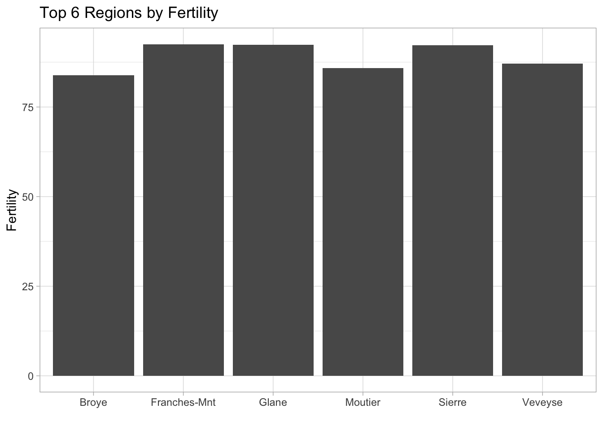

Quarto Shinylive test
Quarto + Shinylive
Taking Quarto docs to the next level by embedding live, fully interactive Shiny apps!
To learn more about Quarto see https://quarto.org.
To learn more about Shinylive see https://github.com/posit-dev/r-shinylive
Swiss Info data
R built-in example data on social indicators by region.
Visualize

Now with Shiny!
#| standalone: true
library(shiny)
library(datasets)
library(tidyverse)
# get data
#swiss_t <- swiss_top
# Define shiny ui
ui <- fluidPage(
# shiny UI components here
# Application title
titlePanel("Swiss data"),
# Sidebar layout with input and output definitions
sidebarLayout(
# Sidebar panel for inputs
sidebarPanel(
# Input: checkbox for the regions to plot
checkboxGroupInput(inputId = "reg",
label = "Choose region:",
choices = list("Broye" = "Broye",
"Franches-Mnt" = "Franches-Mnt",
"Glan" = "Glane",
"Moutier" = "Moutier",
"Sierre" = "Sierre",
"Veveyse" = "Veveyse"),
selected = c("Broye","Franches-Mnt","Glane","Moutier",
"Sierre","Veveyse"))
),
# Main panel for displaying outputs
mainPanel(
h3('Swiss Chart'),
# Output: Column chart rendered with ggplot2
plotOutput(outputId = "fert")
)
)
)
# Define shiny server logic here
server <- function(input, output) {
# shiny server code
# Reactive expression to generate the plot based on the input$var
output$fert <- renderPlot({
# Your data processing and plotting logic here
# This will need to be updated based on how you want to use input$var
# Sample data
#swiss <- swiss_t
swiss <- swiss
swiss$reg <- rownames(swiss)
swiss_top <- swiss %>% arrange(-Fertility) %>% slice_head(n=6)
# Generate ggplot2 column chart
swiss_top %>% ggplot(aes(x=reg, y=Fertility))+geom_col()+
labs(title='Top 6 Regions by Fertility', x="")+
theme_light()
})
}
# create and launch shiny app
shinyApp(ui = ui, server = server)
Semi-shiny
#| standalone: true
library(shiny)
# get data
#swiss_t <- swiss_top
ui <- fluidPage(
# App title ----
titlePanel("Swiss Shiny here?"),
# Sidebar layout with input and output definitions ----
sidebarLayout(
# Sidebar panel for inputs ----
sidebarPanel(
sidebarPanel(
# Input: Slider for the number of bins ----
sliderInput(inputId = "bins",
label = "Number of bins:",
min = 1,
max = 50,
value = 30),
# Input: checkbox for the regions to plot
checkboxGroupInput(inputId = "reg",
label = "Choose region:",
choices = list("Broye" = "Broye",
"Franches-Mnt" = "Franches-Mnt",
"Glan" = "Glane",
"Moutier" = "Moutier",
"Sierre" = "Sierre",
"Veveyse" = "Veveyse"),
selected = c("Broye","Franches-Mnt","Glane","Moutier",
"Sierre","Veveyse"))
)
),
# Main panel for displaying outputs ----
mainPanel(
)
)
)
# Define server logic required to draw a histogram ----
server <- function(input, output) {
}
# Create Shiny app ----
shinyApp(ui = ui, server = server)
Other shiny
#| standalone: true
library(shiny)
# share as live shiny app using shinylive.io + gist id:
# https://shinylive.io/r/app/#gist=4bb02686a0bb1f597441527f3031771e
# Define UI for app that draws a histogram ----
ui <- fluidPage(
# App title ----
titlePanel("Shiny in the browser!"),
# Sidebar layout with input and output definitions ----
sidebarLayout(
# Sidebar panel for inputs ----
sidebarPanel(
# Input: Slider for the number of bins ----
sliderInput(inputId = "bins",
label = "Number of bins:",
min = 1,
max = 50,
value = 30)
),
# Main panel for displaying outputs ----
mainPanel(
# Output: Histogram ----
plotOutput(outputId = "distPlot")
)
)
)
# Define server logic required to draw a histogram ----
server <- function(input, output) {
# Histogram of the Old Faithful Geyser Data ----
# with requested number of bins
# This expression that generates a histogram is wrapped in a call
# to renderPlot to indicate that:
#
# 1. It is "reactive" and therefore should be automatically
# re-executed when inputs (input$bins) change
# 2. Its output type is a plot
output$distPlot <- renderPlot({
x <- faithful$waiting
bins <- seq(min(x), max(x), length.out = input$bins + 1)
hist(x, breaks = bins, col = "#75AADB", border = "white",
xlab = "Waiting time to next eruption (in mins)",
main = "Histogram of waiting times")
})
}
# Create Shiny app ----
shinyApp(ui = ui, server = server)